A proposed project · Willowdale, Toronto · June 2027 – March 2028
When a newcomer child is teased for their accent, they should know it is not their fault, and exactly who to tell.
We will help 50 Vietnamese newcomer children aged 6–12, and their families, recognize, name and safely report racism and race-based bullying, and give schools and the City the information they need to respond.
CVCEC is applying to the Canadian Race Relations Foundation's National Anti-Racism Fund for this project (application due December 4, 2026; decisions expected by mid-February 2027). Activities depend on the funding decision.
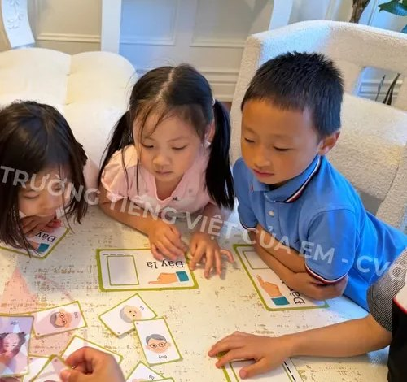
At a glance
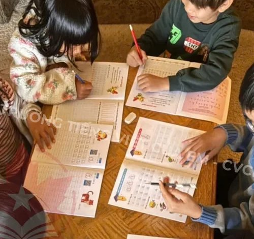
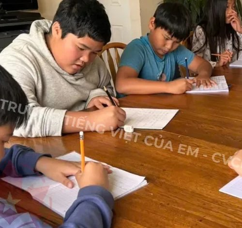
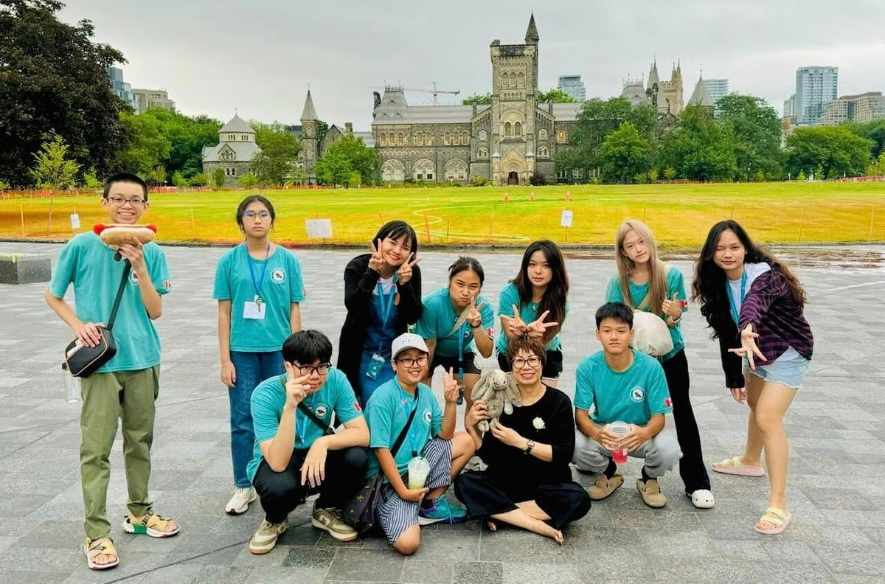
The problem
Vietnamese families are moving to North York, close to TDSB's head office. Parents tell us the same three things.
Many children don't know this can be racism, or that it isn't their fault.
Long work hours and little school information in Vietnamese.
Counted inside a broad "Southeast Asian" group.
Evidence of need
Willowdale (Ward 18), 2021 Census: number of residents
The data gap: Vietnamese families don't appear in any of the ward's top-ten lists. This project will create the first community-level picture.
Source: Statistics Canada, 2021 Census of Population, City of Toronto Ward 18 Willowdale profile (population in private households: 117,125).
Our solution builds on what already works
The project grows out of a school that families already trust. Language and culture classes give children pride in who they are, and give parents a reason to come together every week.
Proof of concept
Since the PEI classes joined CVCEC on June 1, 2026, they have grown into a community where children learn together and parents meet, share and support each other. Willowdale will follow the same model, with the anti-racism and safety program built in.
Families come for the language class, so reaching 50 children and 20 parents is realistic.
The curriculum exists, so the grant pays for delivery and safety, not for starting from scratch.
What works in PEI is adapted for Willowdale, from December 2026 at North York Central Library.
Timeline
Nine months, three phases, one Saturday rhythm families already know.
Swipe sideways to see the full timeline.
Workshops run every second Saturday at North York Central Library.
Theory of change
Assumption we will test: with the words, trusted adults and information in their own language, more incidents are reported and addressed.
Evaluation plan
Numbers show how much changed. Stories show why. An independent evaluator designs and analyses both.
of children can name the signs of racism and who to tell
of parents know how to report an incident
of children attend 8+ of 12 workshops
in children's confidence and sense of belonging
Targets, measured with surveys in September 2027 (before) and February 2028 (after).
About 40 hours, August 2027 to March 2028, compensated through the project budget. The evaluator does not deliver activities.
| Indicator | Tool | When | Target |
|---|---|---|---|
| Children can identify racist and bullying behaviour, and name two trusted adults and one way to get help | Picture-based pre- and post-survey with scenario cards | Sep 2027 → Feb 2028 | 80% |
| Children's self-rated confidence and sense of belonging | Same survey, child-friendly rating scale | Sep 2027 → Feb 2028 | +30% on average |
| Parents can describe how to raise a concern or report an incident to the school | Vietnamese-language pre- and post-survey | Sep 2027 → Feb 2028 | 80% |
| Participation | Attendance logs | Every session | 80% of children attend 8+ of 12 workshops; 20+ parents attend 3+ sessions |
| Parents put what they learned into practice | Follow-up parent survey, three months after the sessions | Early 2028 | Number who used the Family Guide or contacted the school |
| Policy engagement | Policy engagement log and written responses | Ongoing to Mar 2028 | 5+ decision-makers engaged; 2+ recommendations acknowledged or acted on |
Policy pathway
Practical, low-cost changes that existing policies already allow.
Why now: TDSB already has a procedure for reporting racism and hate incidents, and the City's newcomer strategy (2022–2026) is up for renewal. The missing piece is access in Vietnamese.
Ask: Vietnamese information on reporting; interpreters for parents
Ask: Southeast Asian stories in anti-racism learning
Ask: Translated notices and invitations
Ask: Count small communities in the renewed strategy
| Decision-maker | Their lever | What we will ask | When |
|---|---|---|---|
| TDSB Trustee for Ward 4 and the Office of the Provincial Supervisor | Board communications and the procedure for reporting racism and hate incidents | Vietnamese-language information on how families can report and what happens next; interpretation for parents in incident meetings | Briefing and roundtable, winter 2028 |
| TDSB equity and human rights leaders, and local principals | School anti-racism learning and school–family communication | Include Southeast Asian, including Vietnamese, experiences in anti-racism learning | Workshop visits fall 2027; roundtable |
| Councillor, Ward 18 Willowdale | Ward newcomer engagement and community meetings | Translated notices and invitations for Vietnamese families | Festival and roundtable, winter 2028 |
| City of Toronto Newcomer Office | Renewal of the Toronto Newcomer Strategy after 2026 | Recognize small, under-counted newcomer communities and support in-language outreach | Community Impact Report, March 2028 |
We will ask each office for a written response. If the model works here, it can serve other small newcomer communities.
The Canada Vietnam Cultural & Educational Council is a federal not-for-profit founded in 2024 and led by Vietnamese immigrant women educators who have lived the newcomer experience in Canadian schools.
students, youth and parents reached with our orientation guides
youth leaders trained in person
free online Vietnamese lessons for children and families
projects selected for the University of Toronto School of Cities' Leading Urban Change program, 2026
Our weekly Vietnamese language and culture class opens at North York Central Library in December 2026. It is where families will first hear about the project.
Project lead Thi Quynh Trang Phan is a Willowdale resident and TDSB parent with ten years in international education. She works with CVCEC's Vietnamese teachers, Viet Youth leaders aged 16–20, and an advisory circle of Willowdale parents.
A four-member board, conflict of interest, child safeguarding and financial controls policies, two approvals for every significant payment, and an independent evaluation.
About us
Vietnamese immigrant women educators, Vietnamese language teachers across Canada, and a youth team who know these families' journey first-hand.
Founder and President
Project lead. Willowdale resident and TDSB parent, with 10 years in international education.
Director, Global Engagement
Academic collaborator in AI in Education research at the University of Oxford.
Treasurer
Academic researcher in Vietnamese language and culture.
Director, Academic Programs
Leads CVCEC's curriculum strategy, with 7+ years bridging education standards between Vietnam and Canada.
Vietnamese Language & Academic Director
Leads the PEI classes and curriculum development.
Vietnamese Language Teacher
Prince Edward Island
Vietnamese Language Teacher
Manitoba
Academic Advisor
Designs culturally relevant Vietnamese curricula.
Performance Specialist
Curates concerts and music showcases for community events.
Directors serve without pay as directors. The project is also guided by an advisory circle of Willowdale parents and a Viet Youth leader.
Our community in action
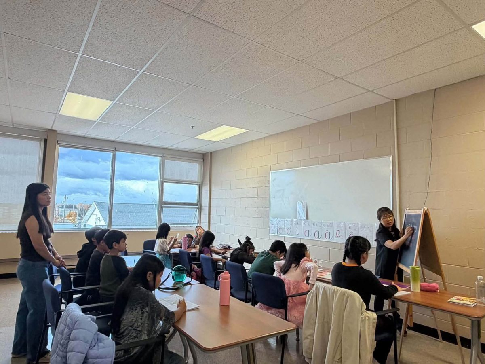
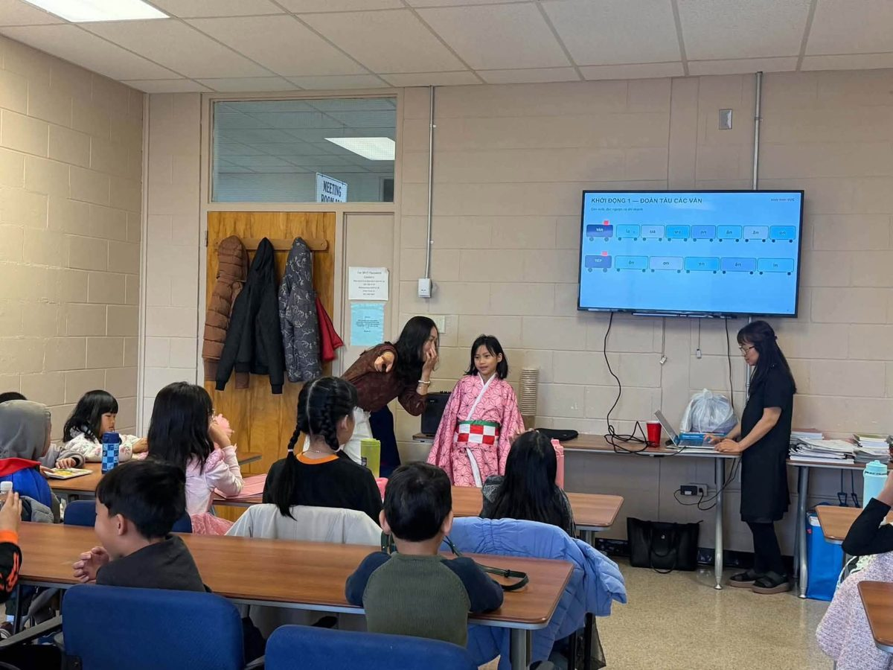
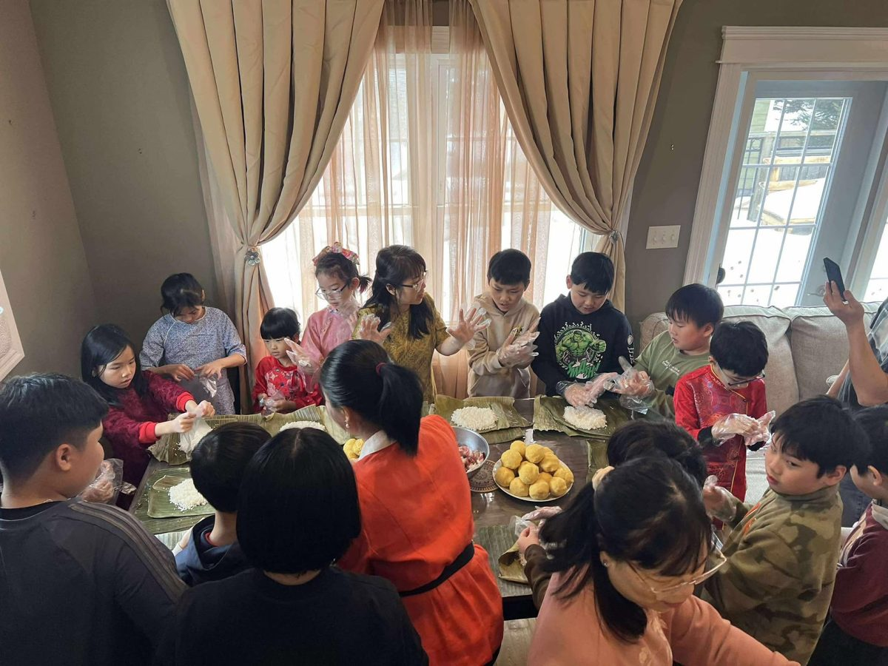
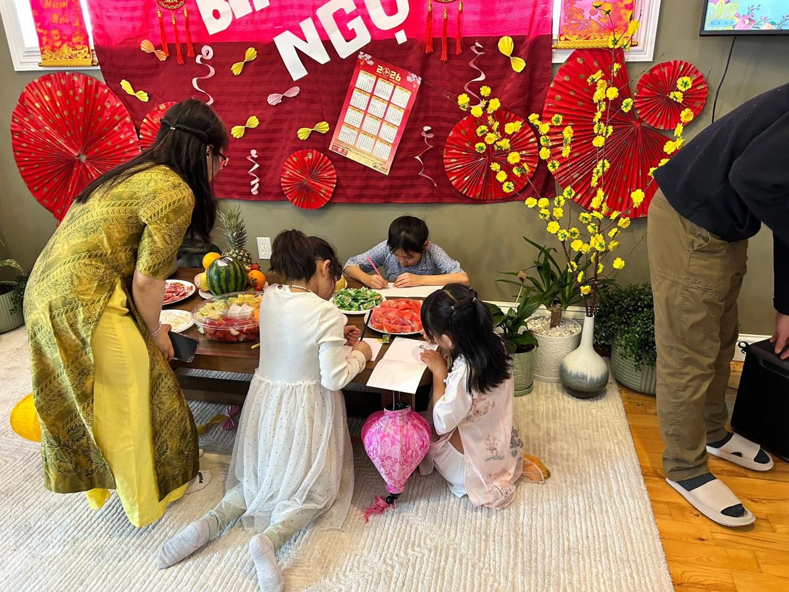
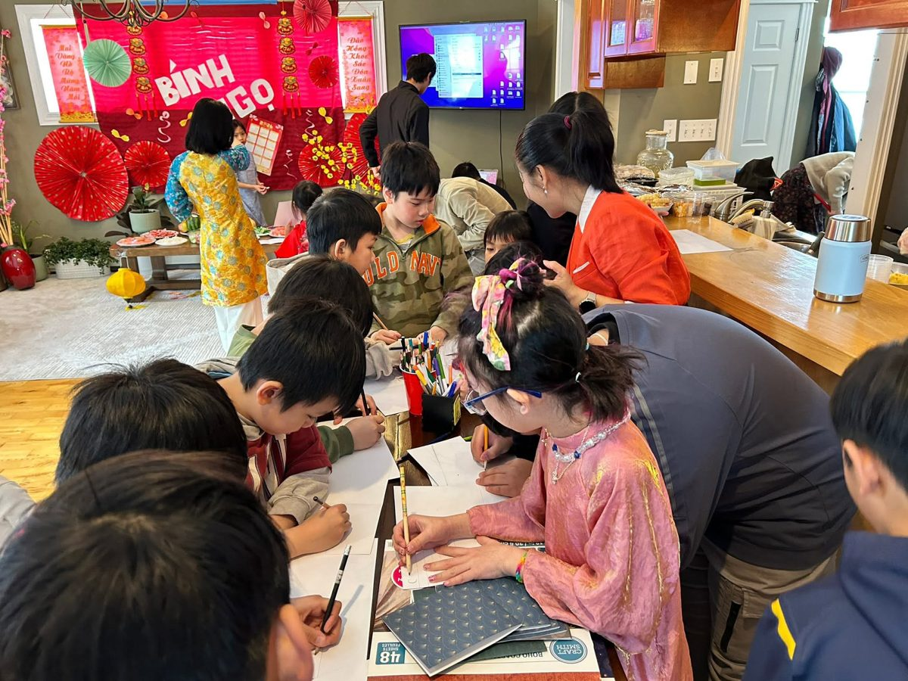
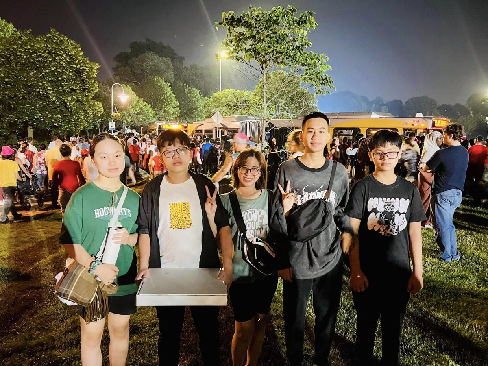
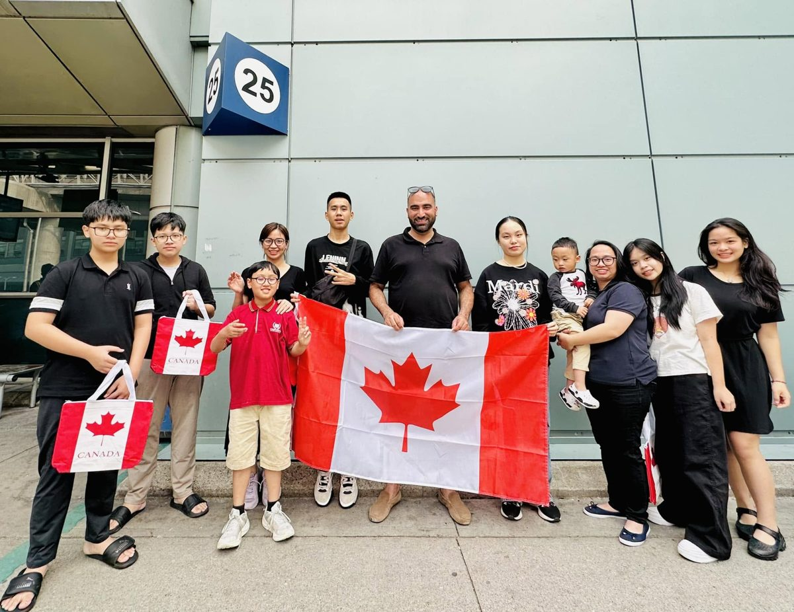
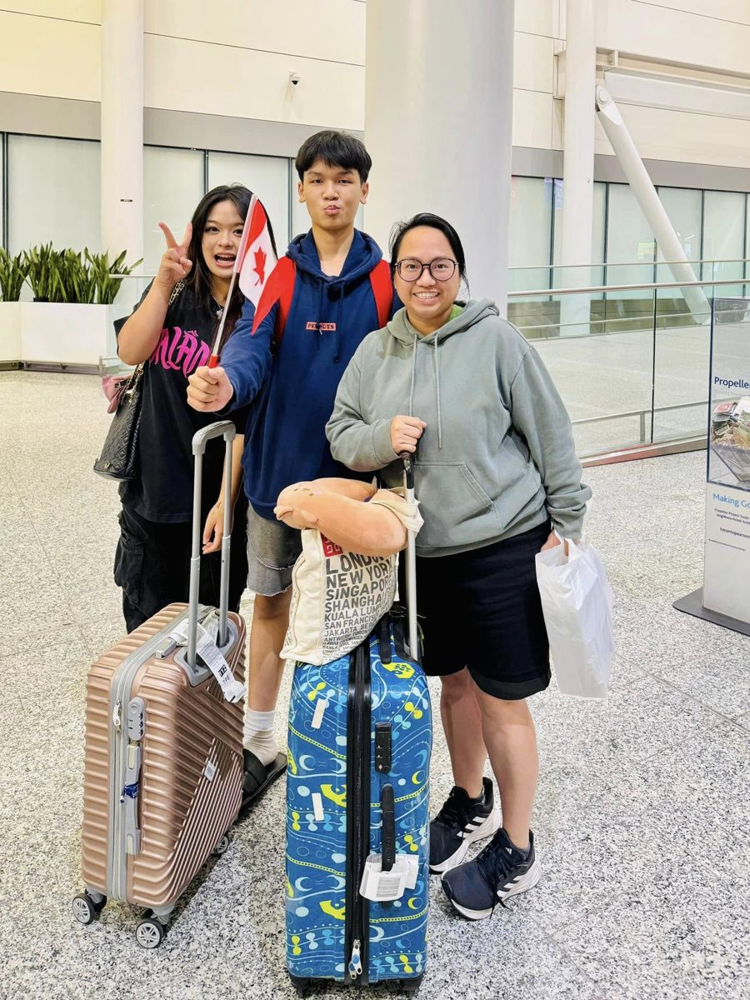
Letters by November 30, 2026
A short letter of support tells the funder that local leaders know this project and believe in it. It is not a financial commitment. If the project is funded, we will contact you to agree on any role together.
Send your letter or ask a questionA few paragraphs on your letterhead. A template is below.
Observe a workshop or join the community festival in 2027–28.
Hear the findings in winter 2028 and respond to the recommendations.
Help the guide reach families through your school, library or network.
No. It tells the funder that you know the project and support it. If the project is funded, we will contact you to agree on any role.
We will let you know as soon as decisions are announced, expected by mid-February 2027. Our weekly Vietnamese class at North York Central Library continues, and we will look for other ways to deliver parts of this work.
We collect written parental consent, never publish children's names or identifying details, and keep data in restricted accounts. Reports use anonymized findings only.
Vietnamese newcomers are a small community that is growing in North York and is rarely visible in public data. If the model works here, it can serve other small newcomer communities.
Thi Quynh Trang Phan
Founder and President, Canada Vietnam Cultural & Educational Council
Dự án đề xuất · Willowdale, Toronto · 6/2027 – 3/2028
Dự án Sẵn sàng & An toàn cho trẻ em Việt
Khi một em nhỏ mới sang bị trêu vì giọng nói, em cần biết rằng đó không phải lỗi của em, và biết chính xác phải nói với ai.
Dự án giúp 50 trẻ em Việt mới đến Canada, từ 6 đến 12 tuổi, cùng gia đình nhận biết, gọi tên và lên tiếng an toàn khi gặp phân biệt chủng tộc và bắt nạt vì nguồn gốc, đồng thời giúp nhà trường và Thành phố có thông tin để hỗ trợ kịp thời.
CVCEC đang nộp hồ sơ xin tài trợ cho dự án này từ Quỹ Chống phân biệt chủng tộc Quốc gia (National Anti-Racism Fund) của Canadian Race Relations Foundation, hạn nộp 4/12/2026, dự kiến có kết quả trước giữa tháng 2/2027. Các hoạt động phụ thuộc vào kết quả xét duyệt.
Tóm tắt
Vấn đề
Ngày càng nhiều gia đình Việt chuyển về North York, gần trụ sở TDSB. Phụ huynh nhiều lần chia sẻ với chúng tôi ba điều.
Nhiều em không biết đó có thể là phân biệt chủng tộc, và không phải lỗi của mình.
Làm việc nhiều giờ, ít nhận được thông tin từ trường bằng tiếng Việt.
Bị tính gộp vào nhóm "Đông Nam Á".
Bằng chứng về nhu cầu
Willowdale (Phường 18), Điều tra Dân số 2021: số cư dân
Khoảng trống dữ liệu: gia đình Việt không có mặt trong bất kỳ danh sách mười nhóm lớn nhất nào của khu vực. Dự án sẽ tạo ra bức tranh đầu tiên ở cấp cộng đồng.
Nguồn: Thống kê Canada, Điều tra Dân số 2021, hồ sơ Phường 18 Willowdale của Thành phố Toronto (dân số trong hộ gia đình: 117.125).
Giải pháp dựa trên những gì đã hiệu quả
Dự án lớn lên từ một ngôi trường mà các gia đình đã tin tưởng. Lớp tiếng Việt và văn hóa giúp các em tự hào về bản thân, và cho phụ huynh một lý do để gặp nhau mỗi tuần.
Mô hình đã chứng minh
Từ khi các lớp ở PEI nhập về CVCEC ngày 1/6/2026, lớp học đã trở thành một cộng đồng nơi các em cùng học và phụ huynh gặp gỡ, chia sẻ, hỗ trợ nhau. Willowdale sẽ đi theo đúng mô hình này, có thêm chương trình chống phân biệt chủng tộc và an toàn.
Các gia đình đến vì lớp tiếng Việt, nên mục tiêu 50 trẻ và 20 phụ huynh là khả thi.
Giáo trình đã có, nên tiền tài trợ dùng cho tổ chức lớp và an toàn, không phải làm lại từ đầu.
Mô hình thành công ở PEI được điều chỉnh cho Willowdale, bắt đầu từ tháng 12/2026 tại North York Central Library.
Tiến độ
Chín tháng, ba giai đoạn, cùng một nhịp sáng thứ Bảy mà các gia đình đã quen.
Vuốt ngang để xem toàn bộ tiến độ.
Workshop diễn ra hai tuần một lần vào sáng thứ Bảy tại North York Central Library.
Lý thuyết thay đổi
Giả định sẽ kiểm chứng: khi có từ ngữ, người lớn tin cậy và thông tin bằng tiếng mẹ đẻ, nhiều sự việc sẽ được báo cáo và xử lý hơn.
Kế hoạch đánh giá
Con số cho thấy thay đổi bao nhiêu. Câu chuyện cho thấy vì sao. Một chuyên gia độc lập thiết kế và phân tích cả hai.
trẻ nhận ra dấu hiệu phân biệt chủng tộc và biết nói với ai
phụ huynh biết cách báo sự việc
trẻ dự từ 8/12 workshop trở lên
sự tự tin và cảm giác được thuộc về của trẻ
Mục tiêu, đo bằng khảo sát vào tháng 9/2027 (trước) và tháng 2/2028 (sau).
Khoảng 40 giờ, từ tháng 8/2027 đến tháng 3/2028, trả thù lao từ ngân sách dự án. Chuyên gia không trực tiếp tổ chức hoạt động.
| Chỉ số | Công cụ | Thời điểm | Mục tiêu |
|---|---|---|---|
| Trẻ nhận biết được hành vi phân biệt chủng tộc và bắt nạt, kể tên được hai người lớn tin cậy và một cách tìm trợ giúp | Khảo sát bằng tranh trước và sau, kèm thẻ tình huống | 9/2027 → 2/2028 | 80% |
| Mức tự tin và cảm giác được thuộc về của trẻ (trẻ tự đánh giá) | Cùng khảo sát, thang điểm thân thiện với trẻ | 9/2027 → 2/2028 | +30% trung bình |
| Phụ huynh biết cách nêu lo ngại hoặc báo sự việc với nhà trường | Khảo sát tiếng Việt trước và sau | 9/2027 → 2/2028 | 80% |
| Mức độ tham gia | Sổ điểm danh | Mỗi buổi | 80% trẻ dự từ 8/12 buổi trở lên; 20+ phụ huynh dự từ 3 buổi trở lên |
| Phụ huynh áp dụng điều đã học | Khảo sát phụ huynh ba tháng sau các buổi sinh hoạt | Đầu năm 2028 | Số phụ huynh đã dùng Cẩm nang hoặc liên hệ nhà trường |
| Tiếp cận chính sách | Sổ theo dõi làm việc với cơ quan và các phản hồi bằng văn bản | Liên tục đến 3/2028 | 5+ cơ quan được tiếp cận; 2+ khuyến nghị được ghi nhận hoặc thực hiện |
Lộ trình chính sách
Những thay đổi thiết thực, chi phí thấp, mà các chính sách hiện có đã cho phép.
Vì sao là lúc này: TDSB đã có quy trình báo cáo sự việc phân biệt chủng tộc và thù ghét, và chiến lược người mới đến của Thành phố (2022–2026) sắp được đổi mới. Mảnh ghép còn thiếu là thông tin bằng tiếng Việt.
Đề xuất: Thông tin tiếng Việt về cách báo cáo; phiên dịch cho phụ huynh
Đề xuất: Đưa câu chuyện người Đông Nam Á vào bài học chống phân biệt
Đề xuất: Thông báo và thư mời được dịch
Đề xuất: Ghi nhận các cộng đồng nhỏ trong chiến lược mới
| Cơ quan ra quyết định | Công cụ trong tay họ | Chúng tôi đề xuất gì | Khi nào |
|---|---|---|---|
| Ủy viên Hội đồng Trường học TDSB Phường 4 và Văn phòng Giám sát của tỉnh | Thông tin của hội đồng trường và quy trình báo cáo sự việc phân biệt chủng tộc, thù ghét | Thông tin bằng tiếng Việt về cách gia đình báo cáo và điều gì xảy ra sau đó; phiên dịch cho phụ huynh trong các buổi họp về sự việc | Gặp trao đổi và đối thoại, mùa đông 2028 |
| Lãnh đạo phụ trách công bằng, nhân quyền của TDSB và hiệu trưởng các trường trong khu vực | Nội dung học chống phân biệt chủng tộc và liên lạc giữa trường với gia đình | Đưa trải nghiệm của người Đông Nam Á, trong đó có người Việt, vào nội dung học | Dự workshop mùa thu 2027; đối thoại |
| Ủy viên Hội đồng Thành phố, Phường 18 Willowdale | Hoạt động tiếp cận người mới đến và họp cộng đồng của phường | Thông báo và thư mời được dịch cho gia đình Việt | Lễ hội và đối thoại, mùa đông 2028 |
| Văn phòng Người mới đến của Thành phố Toronto | Đổi mới Chiến lược Người mới đến sau năm 2026 | Ghi nhận các cộng đồng mới đến nhỏ, ít được thống kê, và hỗ trợ tiếp cận bằng tiếng mẹ đẻ | Báo cáo Tác động Cộng đồng, tháng 3/2028 |
Chúng tôi sẽ đề nghị mỗi cơ quan phản hồi bằng văn bản. Nếu mô hình thành công ở đây, nó có thể phục vụ các cộng đồng mới đến nhỏ khác.
Canada Vietnam Cultural & Educational Council (CVCEC) là tổ chức phi lợi nhuận liên bang thành lập năm 2024, do những nhà giáo là phụ nữ Việt nhập cư dẫn dắt, những người đã tự trải qua hành trình làm người mới đến trong trường học Canada.
học sinh, bạn trẻ và phụ huynh đã nhận cẩm nang định hướng của chúng tôi
bạn trẻ đã được đào tạo trực tiếp làm trưởng nhóm
bài học tiếng Việt trực tuyến miễn phí cho trẻ em và gia đình
dự án được chọn vào chương trình Leading Urban Change 2026 của School of Cities, Đại học Toronto
Lớp tiếng Việt và văn hoá hằng tuần của chúng tôi khai giảng tại North York Central Library từ tháng 12/2026. Đây là nơi các gia đình sẽ biết đến dự án đầu tiên.
Trưởng dự án Phan Thị Quỳnh Trang sống tại Willowdale, có con học ở TDSB và có mười năm làm giáo dục quốc tế. Chị làm việc cùng các giáo viên tiếng Việt của CVCEC, các bạn trẻ Viet Youth từ 16 đến 20 tuổi và nhóm cố vấn là phụ huynh ở Willowdale.
Hội đồng quản trị bốn thành viên; chính sách xung đột lợi ích, bảo vệ trẻ em và kiểm soát tài chính; mọi khoản chi đáng kể cần hai người duyệt; và có đánh giá độc lập.
Về chúng tôi
Những nhà giáo là phụ nữ Việt nhập cư, các giáo viên tiếng Việt khắp Canada, và một đội ngũ bạn trẻ đã tự đi qua hành trình của các gia đình này.
Nhà sáng lập và Chủ tịch
Trưởng dự án. Sống tại Willowdale, có con học TDSB, 10 năm làm giáo dục quốc tế.
Phụ trách Kết nối Toàn cầu
Cộng tác viên nghiên cứu AI trong Giáo dục tại Đại học Oxford.
Thủ quỹ
Nhà nghiên cứu về ngôn ngữ và văn hóa Việt.
Phụ trách Chương trình Học thuật
Dẫn dắt chiến lược giáo trình của CVCEC, hơn 7 năm kết nối chuẩn giáo dục Việt Nam và Canada.
Giám đốc Học thuật Tiếng Việt
Phụ trách các lớp ở PEI và phát triển giáo trình.
Giáo viên tiếng Việt
Đảo Hoàng tử Edward (PEI)
Giáo viên tiếng Việt
Manitoba
Cố vấn Học thuật
Thiết kế giáo trình tiếng Việt gắn với văn hóa.
Chuyên viên Biểu diễn
Tổ chức các buổi hòa nhạc và biểu diễn cho sự kiện cộng đồng.
Thành viên Hội đồng không nhận thù lao cho vai trò quản trị. Dự án còn có nhóm cố vấn gồm phụ huynh ở Willowdale và một bạn trẻ Viet Youth.
Cộng đồng của chúng tôi
Nhận thư trước ngày 30/11/2026
Một lá thư hỗ trợ ngắn cho bên tài trợ thấy rằng các tổ chức và người có uy tín ở địa phương biết và tin vào dự án. Thư không phải cam kết tài chính. Nếu dự án được duyệt, chúng tôi sẽ liên hệ để cùng thống nhất vai trò.
Gửi thư hoặc đặt câu hỏiVài đoạn trên giấy tiêu đề của quý vị. Mẫu thư ở bên dưới.
Dự một buổi workshop hoặc lễ hội cộng đồng trong năm 2027–28.
Nghe kết quả vào mùa đông 2028 và phản hồi các khuyến nghị.
Giúp cẩm nang đến tay các gia đình qua trường học, thư viện hoặc mạng lưới của quý vị.
Thư gửi bên tài trợ cần viết bằng tiếng Anh. Quý vị chỉ cần điền vào các chỗ trong ngoặc vuông.
Không. Thư chỉ cho bên tài trợ biết quý vị biết và ủng hộ dự án. Nếu dự án được duyệt, chúng tôi sẽ liên hệ để thống nhất vai trò.
Chúng tôi sẽ báo lại quý vị ngay khi có kết quả, dự kiến trước giữa tháng 2/2027. Lớp tiếng Việt hằng tuần tại North York Central Library vẫn tiếp tục, và chúng tôi sẽ tìm cách khác để thực hiện một phần công việc này.
Chúng tôi có sự đồng ý bằng văn bản của phụ huynh, không bao giờ công bố tên hay thông tin nhận dạng của trẻ, và lưu dữ liệu trong tài khoản giới hạn quyền truy cập. Báo cáo chỉ dùng kết quả ẩn danh.
Người Việt mới đến là một cộng đồng nhỏ nhưng đang tăng ở North York và hầu như không hiện diện trong số liệu công. Nếu mô hình thành công ở đây, nó có thể phục vụ các cộng đồng mới đến nhỏ khác.
Phan Thị Quỳnh Trang
Nhà sáng lập và Chủ tịch, Canada Vietnam Cultural & Educational Council